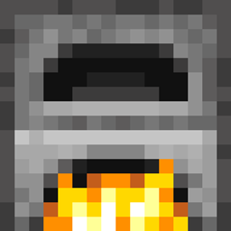
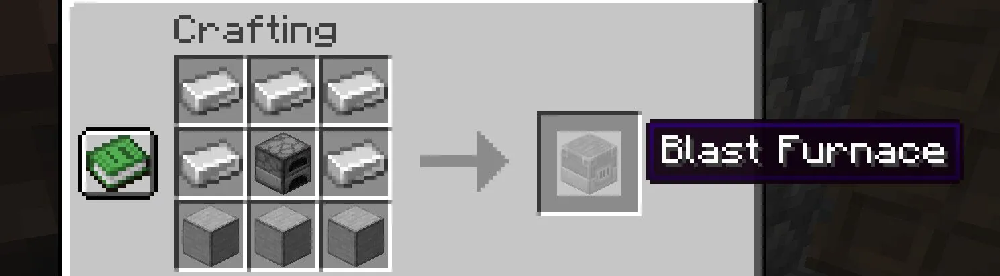

mesa de crafteo horno 5 de hierro y 2 de piedra lisa.
mesa de crafteo horno 5 de hierro y 2 de piedra lisa.
El alto horno hace la misma función que el 
El alto horno se consigue principalmente en una mesa de crafteo horno 5 de hierro y 2 de piedra lisa.

Tambien se pueden conseguir en diversas estructuras.